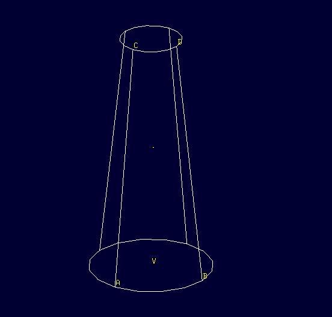
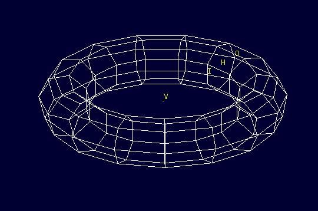

Modeling Pawn
Let’s begin by creating a new database for your pawn and name it
pawn.g. As discussed earlier, to create a new database type the
following command in the Command Window:
opendb pawn.g ENTER
1. Creating a cylinder for the base
Begin by making the Command Window active (usually by clicking anywhere in the window). To make the right circular cylinder, type the following command in the MGED prompt:
in base.rcc rcc ENTER
Here, in is the command which is used to INsert a primitive
shape, base.rcc is the name of the shape and rcc means it is a
Right Circular Cylinder.
MGED asks you to enter x, y and z values of the vertex (where you want to place the center of the bottom of the shape). Type:
0 0 0 ENTER
Make sure to add spaces between the values.
Next, MGED will ask you to enter the x, y and z values of the height (H) vector (the height of your cylinder). Type:
0 0 0.6 ENTER
Then, the last value MGED will ask you to enter is the radius. Type:
2.25 ENTER
Your MGED Command Window will look something like:
mged> in base.rcc rc Enter X, Y, Z of vertex: 0 0 0 Enter X, Y, Z of height (H) vector: 0 0 0.6 Enter radius: 2.25 Base.rcc
You will get something like this on your Graphics Window:
Rather than following this lengthy method, there is another short way
to use the in command. It allows entering all the parameters in
one go. The above command can also be written as:
in base.rcc rcc 0 0 0 0 0 0.6 2.25 ENTER
Meaning of the above command is:
-
in— Insert a primitive shape -
base.rcc— Name it base.rcc -
rcc— Shape should be a right circular cylinder -
0— x value of the vertex is 0 -
0— y value of the vertex is 0 -
0— z value of the vertex is 0 -
0— x value of the height vector is 0 -
0— y value of the height vector is 0 -
0.6— z value of the height vector is 0.6 -
2.25— radius is 2.25
This is how you will be making the rest of the shapes.
Moving on to the upper portion of the pawn.
2. Making the curve
This portion is a little tricky. To make the curve, you will first make a Truncated Right Cone (trc) and then subtract a Torus (tor) from the outer portion of trc.

Figure 1. trc
|

Figure 2. tor
|
To make the trc, type:
in body.trc trc ENTER
The trc should start from the top of the rcc i.e., at the height
of 0.6. MGED will ask for the x, y, z values
of the vertex (center of the bottom part). Type:
0 0 0.6 ENTER
Then MGED will ask us to enter x, y, z values of height vector. Type:
0 0 1.7 ENTER
The next entry we have to make is the radius of the base which must
be the same as the radius of the base.rcc. Therefore, type:
2.25 ENTER
The last value MGED asks for is the top radius. Type:
0.5 ENTER
The graphics window will look like:
To make the curve use the short-hand method of using the in
command. Type in the Command Window:
in curve.tor tor 0 0 2.8 0 0 1 2.85 2.35 ENTER
Here,
-
0 0 2.8are the x, y, z values of the vertex, where:2.8 = 0.6 (z value of vertex of body.trc) + 1.7 (height of body.trc) + 0.5 (radius of the top of body.trc) -
0 0 1are the x, y, z values of the normal vector to make the tube perpendicular to the z-axis. -
2.85is radius1 (radius from Vertex to the center of the tube). -
2.35is radius2 (radius of the tube).
The following image visually explains radius1 and radius2.
3. Making a cylinder for the neck
The cylinder should have vertex 0 0 2.3 where 2.3 came after
adding vertex and height of body.trc such that the neck is placed
right on top of the body. The height vector of the cylinder should be
0 0 0.5 and the radius should be 1.4. Therefore, type:
in neck.rcc rcc 0 0 2.3 0 0 0.5 1.4 ENTER
4. Making a sphere for the head
Make a sphere with vertex 0 0 3.6 and radius 1.1. Technically the
vertex of the sphere should be
3.6 = 2.3 (the vertex of neck.rcc)
+ 0.25 (half of the height of neck.rcc)
+ 1.1 (radius of this sphere)
But we want to cut some portion of the head from below. Type:
in head.sph sph 0 0 3.6 1.1 ENTER
To zoom out of the view click the left mouse button and to zoom back in click the right mouse button. This is what your pawn looks like till now:
Go to View from menu bar and click on Front. This is what your pawn looks in the front view:
5. Making a region
Before you can raytrace your design, you have to make of region of all the shapes. Making a region basically means that the shape has uniform material properties i.e., it has mass and occupies space. Constructing a region involves using Boolean operations of union, subtraction, and intersection. To make the region, type:
r pawn.r u base.rcc u body.trc - curve.tor u neck.rcc u head.sph ENTER
This command tells MGED that
-
r— Make a region -
pawn.r— Name it pawn.r -
u— Add the volume of the shape -
-— Subtract the volume of the shape
Here, we are adding the volume of all the shapes except curve.tor,
which we are subtracting from body.trc to achieve the required look.
6. Assigning Material Properties to the Region
Now type the following in the MGED command window:
mater pawn.r
MGED will respond with:
Current shader string = Specify shader. Enclose spaces within quotes. Shader?
MGED asks us to enter the type of material we want our region to be made of. To make the region of plastic. Type in:
plastic ENTER
Next, MGED will ask for the color. To make our pawn black in color, type:
0 0 0 ENTER
At last MGED will ask us if we want to inherit the material properties. To answer with NO, type:
0 ENTER
7. Clearing the Graphic Window and drawing the new region
We have shapes visible on our graphics window but it is not our region. To clear the graphics Window of the old design and draw the new region, type:
B pawn.r ENTER
You will see your pawn and the curve.tor is dotted which indicates
that it subtracted from the region. This command tells MGED to Blast
i.e., clear the graphics window and draw the specified region which in
our case is pawn.r. The Blast command is a combination of
Z and draw commands. On a side note, draw command
is used to draw an existing shape. For example, to draw the sphere you
made for the head, type : draw head.sph which tells MGED to
draw head.sph. If the specified shape does not exist, MGED will give
an error.
8. Raytracing your model
Go to the File menu and select Raytrace. A dialog box called the Raytrace Control Panel appears. Next, change the background color by the raytraced by selecting Background Color. A dropdown will appear with some predefined color choices and a color tool. Select the white option. To eliminate the wireframing i.e., the outlines of the shapes, go to Framebuffer (in the Raytrace Control Panel) and select Overlay. The display should appear similar to the following illustration:
Your pawn is ready to serve the King. Now it’s time to model the rest of the pieces.